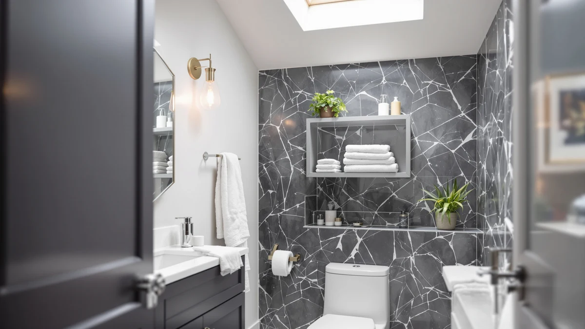

Best Over Toilet Storage for Towels (2026)
Prices and picks verified as of August 2026. Independent, reader-supported reviews.


Quick Answer
The best over toilet storage for towels is the Honey-Can-Do 3-Tier Metal Bathroom Shelf, an open metal-and-wood etagere with a published 45-pound weight capacity, the only hard number of its kind among the seven units we compared. It gives folded towels room to breathe instead of trapping moisture behind a cabinet door, and at $32.87 it costs less than every other pick in this guide.
Our pick: Honey-Can-Do 3-Tier Metal Bathroom Shelf, $32.87 Check Price on Amazon
Bottom line: our top pick is the Honey-Can-Do 3-Tier Metal Bathroom Shelf Space Saver at $32.87. The best budget option is the Kitsure Over Toilet Storage Rack - Metal Over Toilet Bathroom at $35.99.
Things to Know Before You Buy
- Towels need airflow, not just space. The best over toilet storage for towels uses open shelving rather than a sealed cabinet, so damp bath towels can dry between uses instead of trapping moisture against a closed door.
- Measure your tank clearance first. These units range from 63.2 inches tall (Kitsure) to 70 inches tall (VASAGLE), with published widths running from 24.6 inches (VASAGLE) up to 30.7 inches (Homhedy). Check that span against the wall space behind your toilet before you order.
- More tiers means easier sorting. A five-shelf design like the Meilocar lets you separate bath towels, hand towels, and washcloths onto their own level instead of stacking everything together.
- Weight capacity is not always listed. Only the Honey-Can-Do publishes a hard number, 45 pounds, so if you plan to load a shelf with a full stack of bath towels plus a spare box of tissue, check the manufacturer page for anything not spelled out here.
Finding the best over toilet storage for towels usually comes down to one tradeoff: how much shelf space you can fit into a narrow strip of wall without blocking the tank lid or the flush handle. Most bathrooms waste that entire vertical zone above the toilet, leaving bath towels folded on the floor, stuffed into an already-full linen closet, or draped over a single hook. A tall, freestanding shelf or cabinet reclaims that space and gives towels a dedicated spot within arm's reach of the shower.
We compared seven over-the-toilet units ranging from $32.87 to $109.99, looking at shelf count, published dimensions, material, and weight capacity where the manufacturer listed one. For most bathrooms, the Honey-Can-Do 3-Tier Metal Bathroom Shelf is the pick worth ordering first: it is the cheapest option here, its open shelves suit stacked towels better than a closed cabinet, and its 45-pound capacity is the only hard number in this lineup you can plan around.
If you need more shelving than three tiers, the Meilocar's five open shelves spread towels, tissue, and toiletries across more levels for about $82. And if you'd rather hide your towels behind a door than stack them in the open, the Yaheetech Over The Toilet Cabinet is the only pick here built that way. Below, we break down all seven, including where each one falls short.
Why You Should Trust Us
I'm Ilane Tall, and I cover bathroom storage for Best Bathroom Storage, with a focus on the small, awkward zones every bathroom has: the gap above the toilet, the back of a cabinet door, the strip beside the sink. Picking the best over toilet storage for towels is one of the more specific corners of that beat, since a shelf that looks right in a product photo can still be too deep, too tall, or too flimsy once it stands behind your actual toilet. For this guide, I compared manufacturer specs, verified buyer ratings, and pricing across seven units rather than relying on marketing copy alone. We earn a commission if you buy through our links, but that has no bearing on which products we recommend or what we say about their drawbacks.
How We Picked
We started with the search that brings most readers here: the best over toilet storage for towels that will actually fit a standard bathroom without crowding the toilet or blocking the tank lid. That narrowed the field to freestanding etageres and cabinets built specifically for the over-the-toilet footprint, rather than generic bathroom shelving meant for a different spot in the room.
From there we compared published width, depth, and height against a typical 24-to-31-inch wall gap, since a unit that is too wide will not clear the tank or the flush handle. We also weighed material, all seven picks combine metal and wood, and shelf count, and we noted weight capacity wherever the manufacturer listed one, so you know what a shelf can actually hold before it sags.
How We Compared
We compared each pick on the same three factors: how much usable shelf space it adds for its footprint, how the published weight capacity, or lack of one, lines up with what you'd realistically load onto it, and how the material holds up in a room that stays damp most days. The metal-and-wood combination shared by all seven units resists the swelling that solid untreated wood can suffer in a steamy bathroom, though finish and hardware quality still vary by price.
For value, we tracked cost per shelf, since a $109.99 unit with four shelves is a different proposition than a $32.87 unit with three. We also cross-checked verified buyer ratings against the specs each manufacturer publishes, since a listing that reads well on paper is not always confirmed by the people who bought it. That combination, published specs plus verified owner feedback, is how we ranked the best over toilet storage for towels in this guide without needing a physical unit in hand.
Our Picks

Honey-Can-Do 3-Tier Metal Bathroom Shelf
What we like
- At $32.87 it is the least expensive pick in this guide
- A published 45-pound weight capacity is the only hard number in this lineup, so you know what the shelves can hold
- Open shelves let damp towels air out instead of trapping moisture behind a door
Flaws but not dealbreakers
- Three tiers is fewer than the five-shelf Meilocar, so it holds less overall
- Open shelving means everything on it stays visible, which some buyers may not want
- The metal-and-wood build favors function over a furniture-like look
| Material | Metal / wood |
| Size | 45 lbs |
The Honey-Can-Do 3-Tier Metal Bathroom Shelf is the entry point into this guide, and it earns that spot on more than price. Its frame combines a metal structure with wood-toned shelves, and Honey-Can-Do backs it with a published 45-pound weight capacity, the only manufacturer-listed number of its kind among the seven units we compared. That matters if you plan to load a shelf with a full stack of bath towels plus a spare box of tissue, since you can check that math against a real spec instead of guessing. Three open tiers give you enough surface area for folded towels, toiletries, and a small basket, without the added cost of doors or drawers.
Because the shelves are open, towels get airflow instead of sitting behind a closed door where moisture can linger, which matters most in a bathroom that runs a hot shower daily. At $32.87, it is also the cheapest way into this category, so it is a reasonable first purchase if you have never used over-the-toilet storage and want to see whether the format works for your bathroom before spending more. It won't hide clutter the way a cabinet does, but for towels specifically, visible and dry beats hidden and damp.

Kitsure Over Toilet Storage Rack
What we like
- At $35.99 it is priced within two dollars of the cheapest pick in this guide
- A 63.2-inch height puts the top shelf well above the tank, leaving more room for the shelves below
- Three open tiers keep the design simple, with fewer parts to assemble than a cabinet
Flaws but not dealbreakers
- Kitsure does not publish a weight capacity, so you're estimating how much a shelf can hold
- Three tiers offers less total shelving than the five-shelf Meilocar
- Open shelves mean towels and supplies stay visible rather than tucked behind a door
| Material | Metal / wood |
| Size | 3 Tiers (63.2"H) |
The Kitsure Over Toilet Storage Rack is a straightforward metal-and-wood tower that stretches 63.2 inches tall, tall enough to clear most tank lids with room to spare for three full shelves above it. At $35.99, it sits close to the Honey-Can-Do on price while offering noticeably more height, which is the tradeoff to weigh if your bathroom has a tight width but plenty of vertical wall space. Three open tiers give you separate levels for bath towels, hand towels, and the toiletries that usually end up crowding a bathroom counter.
Kitsure does not publish a weight capacity for this rack, which is the main gap compared with the Honey-Can-Do shelf. That is not unusual for units in this price range, but it does mean you're relying on the frame's construction rather than a manufacturer number when you decide how much to load onto it. For most towel storage, that is a manageable risk since folded towels are lighter than the toiletries some buyers stack alongside them. If your priority is squeezing the most height out of a narrow footprint at a low price, this is the pick that does it.

Spirich Over The Toilet Storage
What we like
- A 9-inch depth is shallow enough to clear most toilet tanks without crowding the room
- At 66 inches tall, it offers more vertical storage than the Kitsure without the widest footprint in this guide
- A 24.8-inch width fits most standard over-the-toilet wall gaps
Flaws but not dealbreakers
- At $89.99 it costs more than double the Honey-Can-Do and Kitsure racks
- Spirich does not list a weight capacity, so plan your load around the frame rather than a published number
- Its dimensions put it close to the similarly sized VASAGLE and Yaheetech, so it is worth comparing all three before you buy
| Material | Metal / wood |
| Size | 24.8" (W) x 9" (D) x 66" (H) |
The Spirich Over The Toilet Storage lands in the middle of this lineup on both price and size, at $89.99 and 24.8 inches wide by 9 inches deep by 66 inches tall. That footprint splits the difference between the compact Kitsure rack and the wider Homhedy cabinet, which makes it a reasonable default if you don't know yet how much shelving you actually need. The shallow 9-inch depth is worth noting if your bathroom is tight front-to-back, since it will clear most toilet tanks without pushing into your walking space.
Like most of the mid-tier units in this guide, Spirich does not publish a weight capacity, so the Honey-Can-Do remains the only pick where you can check that number directly. What Spirich does offer is a size that works for towels plus a moderate amount of overflow storage, toilet paper, extra soap, and the small bottles that pile up on a counter, without committing to the largest and most expensive cabinet here. If the Homhedy's 30.7-inch width feels excessive for your space, this is the next size down worth considering.

Homhedy Over The Toilet Storage
What we like
- A 30.7-inch width is the widest in this guide, giving you the most side-to-side shelf space
- Its 7.8-inch depth is shallower than every other pick with a published depth measurement, so it hugs the wall despite the added width
- 65.4 inches of height still leaves room for multiple shelves above the tank
Flaws but not dealbreakers
- At $109.99 it is the most expensive unit in this comparison
- A 30.7-inch width will not fit every wall gap, so measure carefully before you order
- Homhedy does not publish a weight capacity, so the Honey-Can-Do is still the only pick with a confirmed number
| Material | Metal / wood |
| Size | 7.8"D x 30.7"W x 65.4"H |
The Homhedy Over The Toilet Storage is built wide rather than tall, at 30.7 inches across and only 7.8 inches deep, the shallowest depth among the picks with a published depth measurement. That combination means it hugs the wall closely while still giving you more side-to-side shelf space than any other unit here, which is useful if you're storing full-size bath towels that don't fold down to a narrow width. At $109.99, it's also the priciest option here, the one to buy if you've already decided you want maximum capacity over minimum cost.
Before ordering, measure the wall space behind your toilet against that 30.7-inch width. It's roughly 6 inches wider than the next-widest units in this guide, which run between 24.6 and 25 inches, so a gap that fits the Spirich or Yaheetech may not fit the Homhedy. If your bathroom can accommodate it, the payoff is real: more linear shelf space to spread towels, toilet paper, and toiletries across without stacking everything into a single narrow column. Homhedy does not list a weight capacity, so as with most of the mid- and upper-tier picks here, plan your load around the frame's build rather than a published number.

Meilocar Over the Toilet Storage
What we like
- Five open shelves is the most tiers of any pick in this guide
- Extra shelves make it easier to sort towels by size instead of stacking them together
- At $81.99 it undercuts the pricier Homhedy while still offering more shelving than the three-tier racks
Flaws but not dealbreakers
- Meilocar does not publish a weight capacity or overall dimensions, so check the current listing before assuming it will fit your space
- More shelves means more visible surface area to keep tidy
- Five thinner tiers may hold less per shelf than a unit with fewer, deeper shelves
| Material | Metal / wood |
| Size | 5 Open Shelves |
The Meilocar Over the Toilet Storage takes a different approach than the rest of this guide by prioritizing shelf count over overall size, with five open shelves compared with the three tiers on the Honey-Can-Do and Kitsure. That extra shelving gives you room to actually sort towels instead of piling them into one or two stacks: bath towels on one level, hand towels and washcloths on another, with a shelf left over for toilet paper or toiletries. At $81.99, it costs less than the Homhedy while offering more individual shelves than any budget rack in this comparison.
Meilocar's listing does not include a published weight capacity or full dimensions the way some competitors do, so if precise fit matters in your bathroom, cross-check the current listing before ordering. What you're trading for that extra shelf count is depth per shelf: five thinner levels will generally hold less per tier than a unit built with three or four deeper ones. For towel storage specifically, that tradeoff tends to work in your favor, since folded towels don't need much shelf depth to stack neatly.

VASAGLE Over the Toilet Storage
What we like
- At 70 inches, it is the tallest unit in this guide, adding extra height over most competitors
- A 24.6-inch width is the narrowest among the picks with a published width measurement
- At $69.99 it undercuts both the Spirich and Homhedy while offering more height than either
Flaws but not dealbreakers
- The extra height puts the top shelf out of easy reach for shorter users
- VASAGLE does not publish a weight capacity, so plan loads around the frame rather than a confirmed number
- A 70-inch unit needs a level floor and steady footing to avoid feeling top-heavy once loaded
| Material | Metal / wood |
| Size | 7.9"D x 24.6"W x 70"H |
The VASAGLE Over the Toilet Storage is the tallest pick in this guide at 70 inches, about 7 inches taller than the Kitsure and 4 inches taller than the Spirich, while its 24.6-inch width is the narrowest among the units with a published width. That combination makes it a good match for a bathroom with a tight wall gap but a high ceiling, since it trades width for height rather than the other way around. At $69.99, it also comes in cheaper than both the Spirich and Homhedy despite offering more vertical storage than either.
The obvious tradeoff with 70 inches of height is reach: the top shelf will sit above eye level for a lot of people, so it's a better spot for towels and supplies you use less often than the ones you grab daily. VASAGLE does not list a weight capacity, which puts it in the same category as most mid-priced picks here, so distribute heavier items toward the lower shelves rather than the top. If your bathroom is narrow but tall, this is the pick built specifically for that shape.

Yaheetech Over The Toilet Cabinet
What we like
- It is the only cabinet-style pick in this guide, so towels and toiletries stay out of sight
- At $69.99 it matches the VASAGLE's price while adding a closed storage option none of the open racks offer
- A 25-by-9-inch footprint is comparable to the mid-sized Spirich, so it fits a similar range of bathrooms
Flaws but not dealbreakers
- A closed door limits airflow compared with the open shelves on every other pick here, so damp towels dry more slowly
- You can't see what's stored at a glance the way you can with open shelving
- Yaheetech does not publish a weight capacity, so plan loads around the cabinet's build rather than a confirmed spec
| Material | Metal / wood |
| Size | 9″D × 25″W × 66″H |
The Yaheetech Over The Toilet Cabinet is the one enclosed option in this comparison, built with a door rather than open shelves. At $69.99 and roughly 25 inches wide by 9 inches deep by 66 inches tall, its footprint sits close to the Spirich, but the closed front changes how it functions day to day: towels and toiletries stay hidden rather than stacked in view, which matters if you'd rather your bathroom not look like an open pantry.
The tradeoff for that closed-door look is airflow. Every other pick in this guide uses open shelving, which lets damp towels air out between uses, while a cabinet door can trap some of that moisture inside. For dry, folded towels that aren't going back on the shelf still damp from a shower, that's a minor concern, but it's worth knowing before you buy if humidity control is a priority. Yaheetech doesn't list a weight capacity either, so as with most picks outside the Honey-Can-Do, load it with the frame's build in mind rather than a published number.
Quick Comparison
| Product | Material | Price | Rating | Best for | Get it |
|---|---|---|---|---|---|
| Honey-Can-Do 3-Tier Metal Bathroom Shelf | Metal / wood | $32.87 | 4 | Best budget pick with a listed weight capacity | View on Amazon → |
| Kitsure Over Toilet Storage Rack | Metal / wood | $35.99 | 4 | Tallest budget option for narrow bathrooms | View on Amazon → |
| Spirich Over The Toilet Storage | Metal / wood | $89.99 | 4 | Mid-size footprint between budget racks and full cabinets | View on Amazon → |
| Homhedy Over The Toilet Storage | Metal / wood | $109.99 | 4 | Widest shelving for maximum towel capacity | View on Amazon → |
| Meilocar Over the Toilet Storage | Metal / wood | $81.99 | 4 | Most shelves for sorting towels by size | View on Amazon → |
| VASAGLE Over the Toilet Storage | Metal / wood | $69.99 | 4 | Tallest option for narrow, high-ceiling bathrooms | View on Amazon → |
| Yaheetech Over The Toilet Cabinet | Metal / wood | $69.99 | 4 | Only closed cabinet for hiding towels from view | View on Amazon → |
What is the best over toilet storage for towels in a narrow bathroom?
It depends on which dimension is tight.
Do these over-the-toilet units need assembly?
Yes, in nearly every case.
The Competition
A few categories of over-the-toilet storage came up repeatedly in our research but didn't make this list of the best over toilet storage for towels, and it's worth knowing why before you buy.
Tension-rod spacesavers mount between the floor and ceiling under spring pressure instead of standing freestanding like every pick in this guide. They're often cheaper up front, but a shelf loaded with folded towels puts real weight on a joint that relies on tension rather than a stable frame, and that combination tends to wobble under exactly the kind of load these units are meant to carry.
Wall-mounted single shelves solve a narrower problem. They add one flat surface above the tank instead of the multiple tiers you get from a freestanding tower or cabinet, and they require drilling into tile, which rules them out for renters. For towels specifically, a single shelf also runs out of room fast once toilet paper and toiletries start competing for the same space.
Corner caddies built for the shower tempted us early on, since some buyers repurpose them for over-the-toilet storage. We left them out of this guide because their curved or angled shelves suit bottles rather than the flat stacking towels need, and they max out well below the capacity of any of the seven units here.
Frequently Asked Questions
What is the best over toilet storage for towels in a narrow bathroom?
It depends on which dimension is tight. If your wall gap is narrow, the VASAGLE at 24.6 inches wide is the narrowest pick with a published width in this guide. If the space is tight front-to-back instead, the Homhedy's 7.8-inch depth is the shallowest of the units with a published depth, even though it's the widest pick overall at 30.7 inches. Measure both directions before you decide which constraint actually applies to your bathroom.
Do these over-the-toilet units need assembly?
Yes, in nearly every case. Over-the-toilet spacesavers in this category typically ship flat and require assembly with basic tools. The more moving parts a unit has, the longer that usually takes: an open three-shelf rack like the Honey-Can-Do or Kitsure tends to go together faster than a five-shelf design like the Meilocar or a cabinet with a door, like the Yaheetech.
How much weight can over-the-toilet towel storage hold?
It varies by design, and most brands in this comparison don't publish a number. The Honey-Can-Do 3-Tier Metal Bathroom Shelf is the exception, with a listed 45-pound capacity that comfortably holds a stack of folded towels across its three shelves. For the other six picks, check the current Amazon listing for a manufacturer weight rating before loading a shelf with anything heavier than towels and a few toiletries.